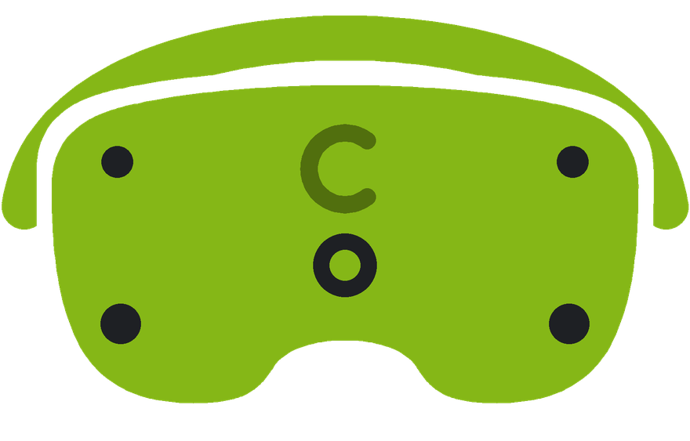

Visually lossless PCVR streaming
Play your PCVR library on your Meta Quest headset with ultra-low latency, over a cable or Wi-Fi.

Built for your headset
Visually lossless clarity
Small text, gauges and fine detail stay crisp where you look, close to what your PC renders.
Ultra-low latency
Every stage, from your PC to the headset's display, is tuned for fast frame delivery, so the game keeps up with you.
Minimal overhead
Proprietary streaming technology built specifically for your headset, with minimal processing overhead, to get the most out of its hardware.
Perfect for simulators
CreoleCast is for every PCVR game, and perfect for simulators where detail and reaction speed count: gauges, mirrors and the world ahead stay sharp, and ultra-low latency keeps up with your reactions.
Even better on Meta Quest Pro
Eye-tracked foveation puts full detail where it counts, right where you look. With less to send, latency drops too.
Cable or Wi-Fi
USB cable Best
The lowest latency and the sharpest picture. Use a USB 3 port and cable.
Wi-Fi
No cable, on your own network. A 5 or 6 GHz router works best, ideally with the PC plugged into it.
Supported features
Wired and wireless
Stream over USB or Wi-Fi.
Eye tracking Meta Quest Pro
Eye-tracked foveation, and eye tracking for games that use it.
Face tracking Meta Quest Pro
Your expressions in compatible social VR apps.
Controllers and hands
Play with Touch controllers, or put them down and use your hands.
Super Resolution
Sharper visuals with Meta Quest Super Resolution.
Body tracking
Your movements as SteamVR trackers, no extra hardware. Full body with Inside-Out Body Tracking (IOBT) on Meta Quest 3 and 3S.
Spacewarp
Smoother motion when a game runs below the headset's refresh rate.
Audio and microphone
Game sound in the headset, and its microphone on your PC for voice chat.
Optional features require compatible hardware, permissions, or software. Visual quality and latency depend on your PC, connection, and settings.
How it works
Install CreoleCast on your PC
It adds itself to SteamVR, starts with Windows and keeps itself up to date. Its window shows what's left to set up.Get CreoleCast on your headset
From the Meta Horizon Store. Keep the headset on the same network as the PC, or plug it into the PC.Pair once, then Connect
Your PC shows up in the headset's menu. Check that both show the same code, and you're paired. Connect starts SteamVR on the PC for you.
Download CreoleCast for Windows
Everything CreoleCast needs on your PC, in one installer.
- PC
- VR-capable Windows PCWindows 10 (version 2004 or later) or Windows 11, 64-bit
- Software
- SteamVRFree on Steam
- Headset
- Meta Quest 2, 3, 3S or ProWith CreoleCast from the Meta Horizon Store
- Connection
- USB cable or Wi-FiUSB 3 for the best experience, or a 5 or 6 GHz router